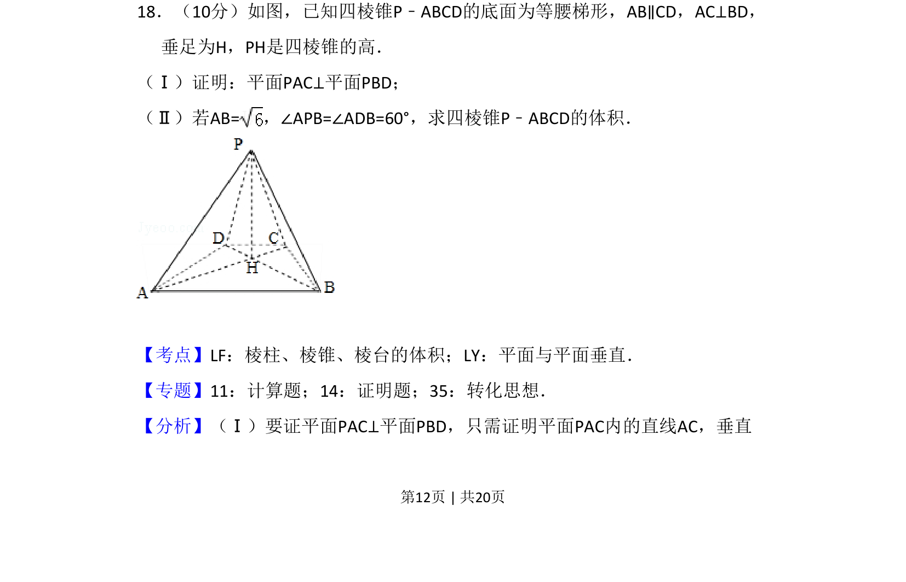
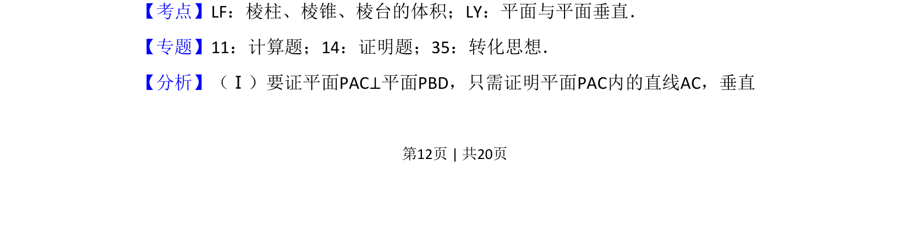
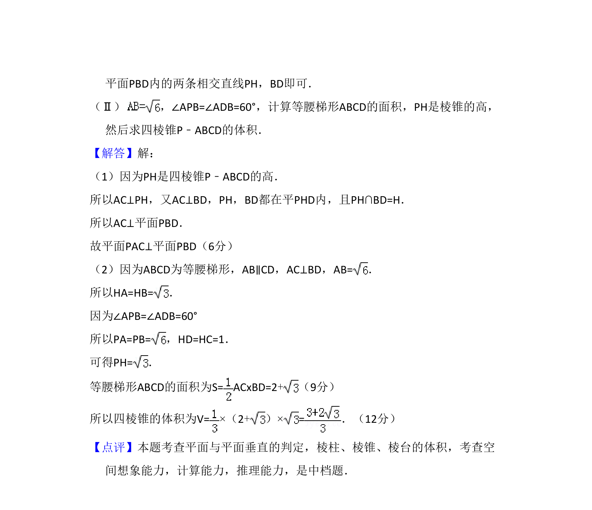

考点：面面垂直 棱锥体积 空间垂直关系

考查四棱锥中面面垂直的证明及已知角度和边长求体积


📄 原 PDF 第 12 页：
素材/真题/吉林/2008-2024·（吉林）数学高考真题/2010年高考数学试卷（文）（新课标）（解析卷）.pdf
18．（10分）如图，已知四棱锥P﹣ABCD的底面为等腰梯形，AB∥CD，AC⊥BD， 垂足为H，PH是四棱锥的高． （Ⅰ）证明：平面PAC⊥平面PBD； （Ⅱ）若AB=，∠APB=∠ADB=60°，求四棱锥P﹣ABCD的体积．
【考点】LF：棱柱、棱锥、棱台的体积；LY：平面与平面垂直．菁优网版权所有 【专题】11：计算题；14：证明题；35：转化思想． 【分析】（Ⅰ）要证平面PAC⊥平面PBD，只需证明平面PAC内的直线AC，垂直